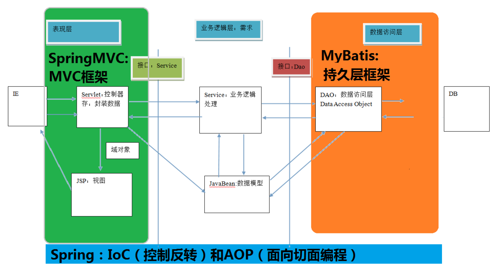
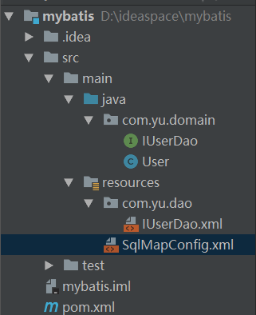
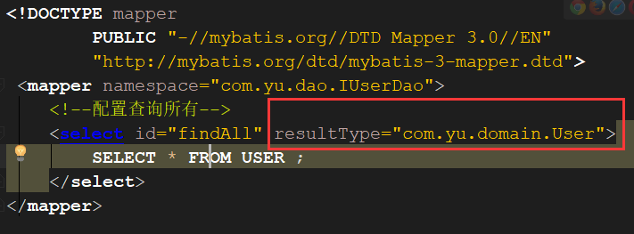
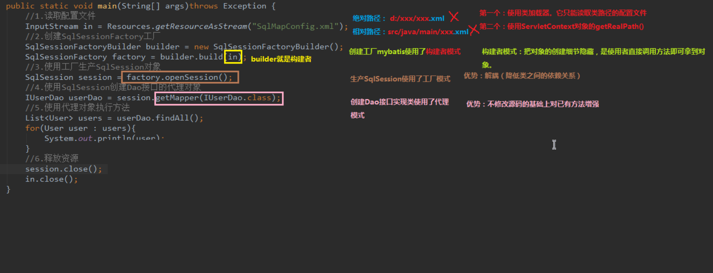
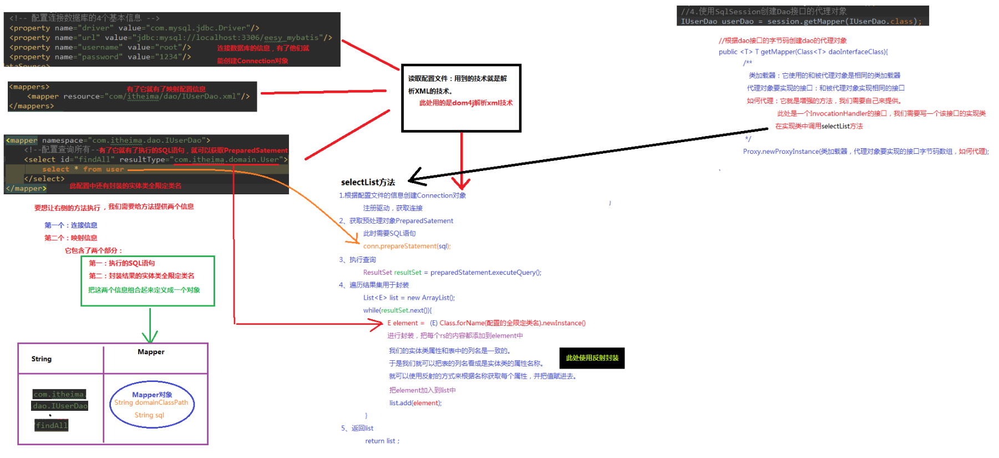

mybatis的入门
框架概述
它是我们软件开发中的一套解决方法，不同的框架解决的是不同的问题。
使用框架的好处：
框架封装了很多的细节，是开发者可以使用极简的方式实现功能，大大提供开发效率。
三层架构
表现层
用于展示数据
业务层
处理业务需求
持久层
和数据库交互
三层架构和ssm框架的对应关系

jdbc操作数据库的问题分析
JDBC技术：
Connection
PreparedStatement
ResultSet
Spring的jdbcTemplate:
Spring中对jdbc的简单封装
Apache的DBUtils
它和Spring的jdbcTemplate很像，也是对JDBC的简单封装
以上这些都不是框架
JDBC是规范
Spring的JdbcTemplate和Apache的DBUtils都只是工具类
mybatis概述
mybatis是一个持久层框架，用java编写的。
它封装了jdbc操作的很多细节，使开发者只需要关注sql语句本身，而无需关注注册驱动，创建连接等繁杂的过程
它使用了ORM思想实现了结果集的封装。
ORM：
Object Relational Mappping 对象关系映射
简单来说：
就是把数据库和实体类及实体类的属性对应起来
让我们可以操作实体类就实现操作数据库表
实体类中的数据和数据库表的字段名称保持一致
mybatis的环境搭建
- 创建maven工程并导入坐标
1 | <dependencies> |
- 创建实体类和dao的接口
- 创建Mybatis的主配置文件:SqlMapConfig.xml
1 | <?xml version="1.0" encoding="UTF-8"?> |
- 创建映射配置文件:IUserDao
1 | <?xml version="1.0" encoding="UTF-8"?> |
具体结构目录如下：

环境搭建的注意事项
- 创建IUserDao.xml 和 IUserDao.java时名称是为了和我们之前的知识保持一致。
在Mybatils中它把持久层的操作接口名称和映射文件也叫做：Mapper。
所以:IUserDao和IUserMapper是一样的。 - 在idea中创建目录的时候，他和包是不一样的
包在创建时：com.yu.dao他是三级结构
目录在创建时：com.yu.dao是一级目录：需要一级一级的创建目录 - mybatis的映射配置文件位置必须和dao接口的包结构相同
- 映射配置文件的mapper标签namespace属性的取值必须是dao接口的全限定类名
- 映射配置文件的操作配置,id属性的取值必须是dao接口的方法名
- 当我们遵从了第三，四，五点之后，我们在开中无需再写dao的实现类。
mybatis的入门
- 导入log4j.properties文件
- 在test创建测试类，编写六个步骤
1 | public class MybatisTest { |
此时运行，程序会出错
1 | A query was run and no Result Maps were found for the Mapped Statement 'com.yu.dao.IUserDao.findAll'. It's likely that neither a Result Type nor a Result Map was specified. |
很明显，查询的数据它不知道封装到哪里去，在我们配置IUserDao.xml的时候需要添加resultType属性，把查询的结果封装到指定的javaBean中

mybatis注解开发和编写dao实现类的方式
- 在持久层中添加sql注解
1 | public interface IUserDao { /** |
- 修改SqlMapConfig.xml
1 | <mappers> |
- 注意事项:
在使用基于注解的 Mybatis 配置时，请移除 xml 的映射配置（IUserDao.xml）。
mybatis入门案例中的设计模式分析

自定义Mybatis的分析
